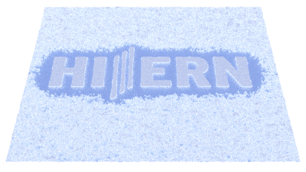
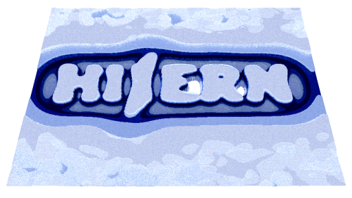
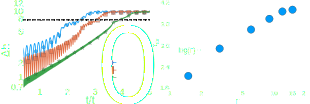
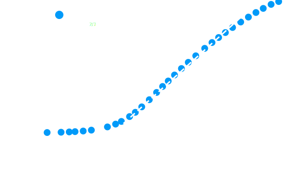
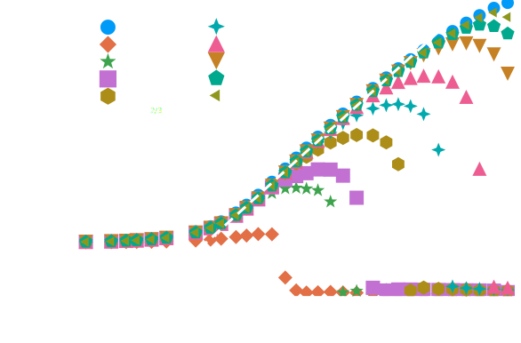

Lattice Boltzmann simulations of the dynamics of thin liquid films
Stefan Zitz
Defense, July 17th 2024, FAU & HI-ERN
thin film dynamics
\[\frac{\partial h(\mathbf{x},t)}{\partial t} = \nabla \cdot [M(h)\nabla p(\mathbf{x},t)] (+ X) \\ M(h) = \frac{h^3(\mathbf{x},t)}{3\mu}\quad \text{no-slip}\] Oron et al., Rev. Mod. Phys., 69 931 1997Thin films interference
Thin-film interference, wikipedia.com
Printable OPV
T. R. Andersen et al., Energy Environ. Sci., 7 2014
Spreading, wetting & dewetting
Boltzmann equation
\[\partial_t f + \boldsymbol{\xi}\cdot\nabla f + \frac{\mathbf{F}}{\rho}\cdot\partial_{\boldsymbol{\xi}}f = \Omega(f) \] Evolution equation of a distribution function $f(\mathbf{x},\boldsymbol{\xi}, t)$ \[ [f] = \frac{kg~s^3}{m^6}\] T. Krüger et al., The Lattice Boltzmann Method: Principles and Practice, 2016Moments
\[\rho(\mathbf{x}, t) = \int f(\mathbf{x},\boldsymbol{\xi}, t) \diff^3\xi \\ \rho\mathbf{u} = \int \boldsymbol{\xi}f(\mathbf{x},\boldsymbol{\xi}, t) \diff^3\xi \\ \rho E = \frac{1}{2}\int |\boldsymbol{\xi}|^2 f(\mathbf{x},\boldsymbol{\xi}, t) \diff^3\xi\]
\[\int \Omega(f) \diff^3\xi = 0 \\ \int \boldsymbol{\xi}\Omega(f) \diff^3\xi = \mathbf{0}\\ \int |\boldsymbol{\xi}|^2 \Omega(f) \diff^3\xi = 0\]
The Collision operator

© S. Harris, sciencecartoonsplus.com
The Collision operator
Dominated by two-body collisions of uncorrelated particles
\[\Omega(f) = -\frac{1}{\tau} (f-f^{eq})\]
with $f^{eq}$ is a Maxwell-Boltzmann distribution
P.L. Bhatnagar, E.P. Gross, M. Krook, Phys. Rev., 93 (3) 1954Hydrodynamic equations
\[\partial_t \int f \diff^3\xi + \int\boldsymbol{\xi}\cdot\nabla f \diff^3\xi + \frac{\mathbf{F}}{\rho}\cdot\int\partial_{\boldsymbol{\xi}}f \diff^3\xi \\= \int\Omega(f)\diff^3\xi \] \[ 0^{th}:\quad \partial_t\rho + \nabla\cdot(\rho\mathbf{u}) = 0\] \[ 1^{st}:\quad \partial_t(\rho\mathbf{u}) + \nabla\cdot(\rho\mathbf{u}\mathbf{u}) = \nabla\cdot\hat{\sigma} + \mathbf{F}\] S. Chen, G. D. Doolen, Annu. Rev. Fluid Mech., 30 (1) 1998Chapman-Enskog
Stress tensor $\hat{\sigma}$ depends on $f$, but we don't know $f$ \[f = f_{0} + \varepsilon f_1 + \varepsilon^2 f_2 + O(\varepsilon^3) \\ \partial_t = \varepsilon\partial_{t_1} + \varepsilon^2\partial_{t_2} + O(\varepsilon^3) \] with $f_0 \simeq f^{eq}$ and $\varepsilon \approx Kn$, at zero'th order\[\partial_t(\rho\mathbf{u}) + \nabla\cdot(\rho\mathbf{u}\mathbf{u}) = -\nabla p + \mathbf{F}\ \] at first order we recover Navier-Stokes
S. Chapman, T. G. Cowling, 1990; D. Enskog, 1917
Swalbe.jl
Shallow WAter Lattice Boltzmann solvEr
\[\partial_t h + \nabla \cdot (h \mathbf{u}) = 0 \\ \partial_t (h \mathbf{u}) + \nabla \cdot (h \mathbf{u}\mathbf{u}) = -gh \nabla h +\\ \nu \nabla^2 (h\mathbf{u}) + 2\nu \nabla (\nabla \cdot (h\mathbf{u})) + \mathbf{F}_{tot}\]
W. Y. Tan, Shallow water hydrodynamics, 1992Shallow water thin film?
Approximating thin films
\[ \mathbf{F}_{tot} = \mathbf{F}_{film} + \mathbf{F}_{fric} + \mathbf{F} \]
Quasisteady processes at low Re with subleading viscous terms
\[\partial_t h + \nabla \cdot (h \mathbf{u}) = 0 \\ 0 = -gh \nabla h - \frac{1}{\rho_0}h\nabla p - \nu\alpha_{\delta}(h) \mathbf{u} + \mathbf{F} \]
S. Zitz et al., Phys. Rev. E, 100(3) 2019Swalbe.jl
“Weeks of coding have saved me hours of thinking.”
\[\partial_t h + \nabla \cdot (h \mathbf{u}) = 0\\ \mathbf{u} \approx \frac{1}{\nu \alpha(h)}\left(-gh \nabla h -\frac{1}{\rho_0}h\nabla p + \mathbf{F}\right) \\ \partial_t h \approx \nabla \cdot \left(\frac{h^3}{3\mu}\nabla p\right)\]
S. Zitz et al., JOSS, 7(77) 2022Details
\[ \alpha_{\delta}(h) = \frac{6h}{2h^2 + 6h\delta + 3\delta^2} \]
\[ p = -\gamma(\Delta h - \Pi(h))\\ \Pi(h) = (1 - \cos\theta)\frac{(n-1)(m-1)}{(n-m)h_*}\\ \left[\left(h_*/h\right)^n -\left(h_*/h\right)^m\right] \]
L. W. Schwartz and R. R. Eley, J. Colloid Interface Sci., 202 1998Patterned substrate
 
dewetting
J. Becker et al., Nat. Mater., 2 2003Thermal fluctuations
\[\partial_t h = \partial_x \left[\frac{h^3}{3\mu}\partial_x p + \sqrt{\frac{2k_BTh^3}{3\mu}}\mathcal{N}\right]\]
B. Davidovitch et al., PRL, 95 2005, G. Grün et al., J. Stat. Phys., 122 2006Fluctuating thin films

\[S(q,t) = S_0 e^{2\omega(q)t} + \sigma^2 h_0^2 Lq_0^{-2}g(q/q_0)(e^{2\omega(q)t} - 1)\\ F_{\text{fluc}} = \rho_0^{-1}\sqrt{2 k_B T \mu \alpha_{\delta}(h)}\mathcal{N}\]
S. Zitz, A. Scagliarini, J. Harting, Phys. Rev. E, 104 2021Rupture times
\[ \chi_{\sigma}(\theta) \sim \frac{\log\left(h_0 L^{1/2}/S_0^{1/2}\right)}{\log\left(\frac{a \theta}{\sigma}\right)} \propto \frac{1}{\log(\theta/\sigma)} \]
Fluctuations and pattern
\[ \Xi = \frac{\tau_d(\pi/6)}{\tau_d(\pi/9)} \propto {\frac{U(\pi/9)}{U(\pi/6)} \sim \frac{\left(\pi/9\right)^3}{\left(\pi/6\right)^3} = \left(\frac{2}{3}\right)^3 = 0.296...} \]
Fluctuations and pattern
Colorful fluid Dynamics

S. Zitz, A. Scagliarini, J. Harting, Phys. Rev. Fluids, 8 2024
Switchable Substrates

\[\theta(\mathbf{x},t) = \theta_0 + \delta\theta\left[\sin(q_{\theta}(x+v_xt))\sin(q_{\theta}(y+v_yt))\right]\]
K. Ichimura et al., Science, 288, 2000Static pattern

Time scale $t_0$ \[ t_0 = \frac{3\mu}{\gamma h_0^3q_0^4} \] Length scale $2\pi/q_0$ \[ q_0^2 = \frac{1}{2\gamma}\frac{\partial \Pi(h)}{\partial h}\bigg\rvert_{h=h_0} \]
Mecke K., Rauscher M., J. Phys. Condens. Matter, 17 2005
Droplet advection
Droplet advection
Grawitter J., Stark H., Soft Matter, 17 2021
Three shades of dewetting
Morphologies

\[\Gamma = \frac{v_{\theta}}{U_{\theta}}, \quad U_{\theta} = \frac{\gamma\Theta^3}{9\mu}\]
Metastable rivulets
\[\Delta h(t)\sim \frac{\lambda}{v_{\theta}}e^{\alpha t},\quad \Delta h(\tau_{\text{riv}})\sim \beta h_0\\ \tau_{\text{riv}} \sim \log(v_{\theta})\sim\log(\Gamma)\]

Conclusion
“If the only tool you have is a hammer, it is tempting to treat everything as if it were a nail.”
- Development of a LBM for thin liquid films
- Effective method for stochastic thin film equation
- Novel dewetting state on switchable substrates
Thank you!
Backup slides
Fluid dynamics
\[ \frac{\partial\rho}{\partial t} + \nabla\cdot(\rho\mathbf{u}) = 0 \\ \rho\left(\frac{\partial\mathbf{u}}{\partial t} + \nabla\cdot\mathbf{u}\mathbf{u}\right) = -\nabla p + \mu\Delta\mathbf{u} + \mathbf{F} \] C. L. Navier, Mém. l’Acad. sci. l’Inst. France, 1823; G. G. Stokes, Trans. Cambridge Philos. Soc. 1842CFD at different scales

D. Raabe, Modelling Simul. Mater. Sci. Eng., 12 2004
The Setting

Wikipedia
Numerics
 \[f^{\star}_i(\mathbf{x}, t) = f_i(\mathbf{x}, t) -\frac{\Delta t}{\tau}(f_i(\mathbf{x}, t) - f^{eq}(\mathbf{x}, t))\]
\[f_i(\mathbf{x} + \mathbf{c}_i\Delta t, t + \Delta t ) = f^{\star}_i(\mathbf{x}, t)\]
P. O'Brien, A framework for digital watercolor, 2008
\[f^{\star}_i(\mathbf{x}, t) = f_i(\mathbf{x}, t) -\frac{\Delta t}{\tau}(f_i(\mathbf{x}, t) - f^{eq}(\mathbf{x}, t))\]
\[f_i(\mathbf{x} + \mathbf{c}_i\Delta t, t + \Delta t ) = f^{\star}_i(\mathbf{x}, t)\]
P. O'Brien, A framework for digital watercolor, 2008
Implementation
for cycle = 1:maxT
% MACROSCOPIC VARIABLES
rho = sum(fIn);
ux = reshape ( (cx * reshape(fIn,9,lx*ly)), 1,lx,ly) ./rho;
uy = reshape ( (cy * reshape(fIn,9,lx*ly)), 1,lx,ly) ./rho;
% COLLISION STEP
for i=1:9
cu = 3*(cx(i)*ux+cy(i)*uy);
fEq(i,:,:) = rho .* t(i) .* ...
( 1 + cu + 1/2*(cu.*cu) - 3/2*(ux.^2+uy.^2) );
fOut(i,:,:) = fIn(i,:,:) - omega .* (fIn(i,:,:)-fEq(i,:,:));
end
% STREAMING STEP
for i=1:9
fIn(i,:,:) = circshift(fOut(i,:,:), [0,cx(i),cy(i)]);
end
What about boundaries?
What does it do
© Jousef Murad
Coalescence and Marangoni forces
Coalescence?
Swalbe.jl
“Ideas can be implemented and tested quickly with a two dimensional system....”
\[ F_{\gamma} = \frac{3}{2}\partial_x\gamma \]
\[ p = -\gamma(\partial_x^2 h - \Pi(h)) \]
S. Zitz et al., arXiv, 2022
Scaling laws
R. Borcia & M. Bestehorn, Langmuir, 29(14) 2013
Scaling laws

\[ p_c \sim \gamma\kappa \\ p_i \sim \rho (h_0/t)^2 \\ h_0 \sim t^{2/3} \\ \tau = \sqrt{\rho R_0^3/\gamma}\]
A. Eddi et al., PRL, 111(14) 2013
Experiments

S. Karpitschka, H. Riegler, Langmuir, 26(14) 2010
Separation
